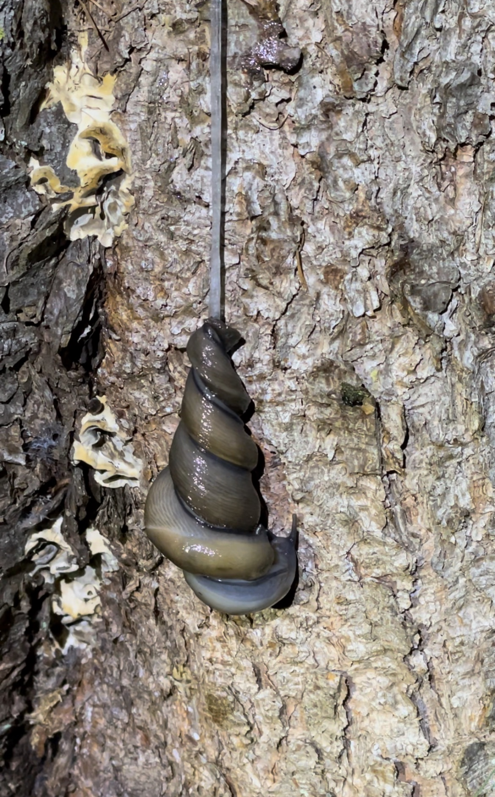
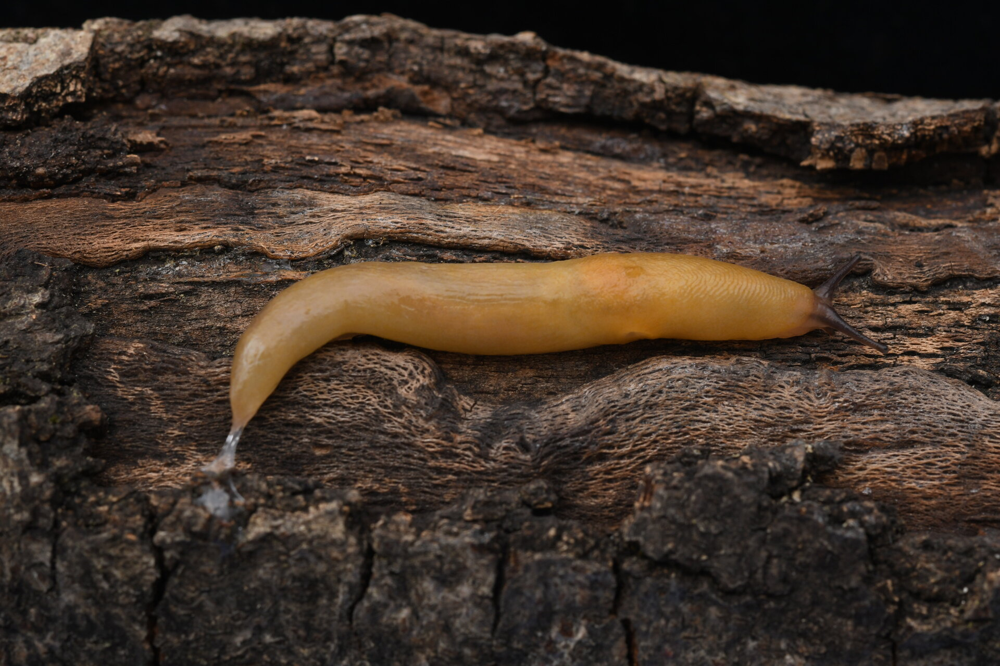
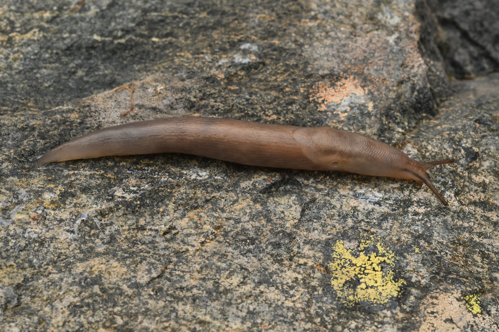
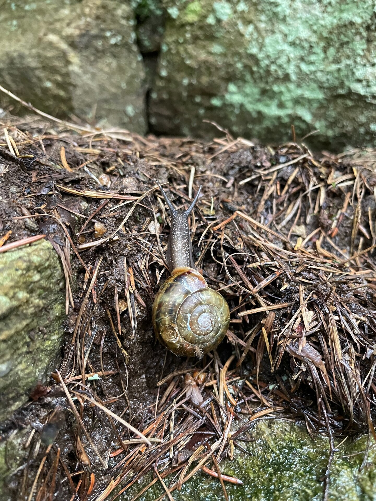

4 Mollusken
4.1 Einleitung Mollusken
Die Umgebung von Ces ist aufgrund ihrer geologischen Beschaffenheit mit Gneis und Glimmerschiefer eine für Schnecken unwirtliche Gegend. Vor allem Gehäuseschnecken sind auf kalkhaltiges Gestein angewiesen. Es verwundert daher nicht, dass Ces eine verhältnismässig hohe Anzahl an Nacktschneckenarten beheimatet, da diese weniger kalkabhängig sind. Sie machen rund einen Drittel der nachgewiesenen Arten aus.
4.2 Sarner Schnegel (Limax sarnensis)


Nebst der allbekannten Spanischen Wegschnecke gibt es in Ces mindestens sieben weitere Nacktschneckenarten zu entdecken. Mit etwas Glück lässt sich in einer feuchten Sommernacht das aufwändige Paarungsverhalten des Sarner Schnegels beobachten.
4.3 Pilzschnegel (Malacolimax tenellus)

Wer gerne Pilze sammelt hat die Chance, dem Pilzschnegel zu begegnen. Es handelt sich hier um eine kleine, gelborange Nacktschnecke mit schwarzen Fühlern, die vor allem im Herbst auch tagsüber gut zu beobachten ist.
4.4 Baumschnegel (Lehmannia marginata)

Der Baumschnegel ernährt sich hauptsächlich von Flechten und Algen. Mit seiner mit kleinen, scharfen Zähnchen bestückten Zunge raspelt er die Nahrung von Felsen und Baumrinden.
4.5 Felsenschnecke (Chilostoma zonatum)

Die Felsenschnecke ist mit gut 2.5 cm Durchmesser die grösste in Ces lebende Häuschenschnecke. Trotz ihrer beachtlichen Grösse ist sie schwierig zu finden. Sie hält sich tagsüber in Felsspalten auf und kommt in der Regel nur nachts zum Fressen aus ihrem Versteck hervor.
4.6 Fundmeldungen
Interaktive Karte mit den Fundmeldungen der kartierten Arten in Ces. Mit einem Klick auf die einzelnen Punkte sind weitere Informationen ersichtlich. An Koordinaten (Punkten), an denen mehrere Arten kartiert wurden, wird die Gefährdungskategorie der am stärksten gefährdeten Art angegeben. Die Präzision gibt an, in welchem Radius der Fund gemacht wurde.
4.7 Artenliste
Aegopinella nitens, Aegopinella pura, Arianta arbustorum, Arion fuscus, Arion vulgaris, Causa holosericea (VU), Causa holosericea, Chilostoma zonatum, Cochlicopa cf. lubrica, Columella edentula, Deroceras cf. agreste, Deroceras cf. laeve, Deroceras sp., Discus ruderatus, Eucobresia sp., Euconulus fulvus, Lehmannia marginata, Limax helveticus, Malacolimax tenellus, Morlina glabra, Nesovitrea petronella, Pisidium cf. amnicum, Tandonia rustica, Vertigo pusilla, Vitrina pellucida